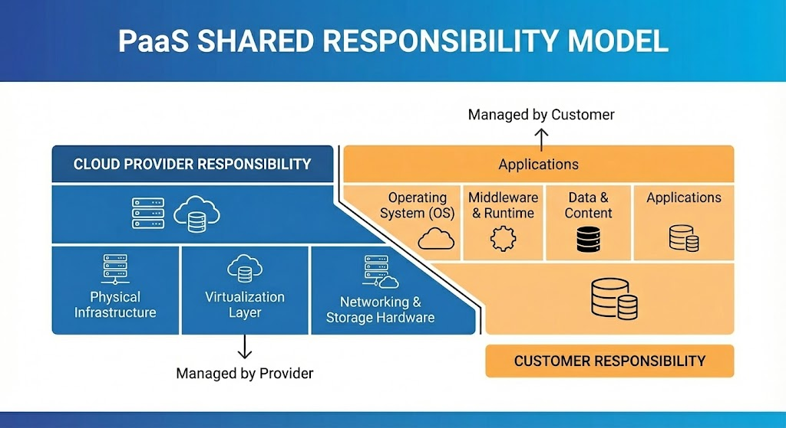
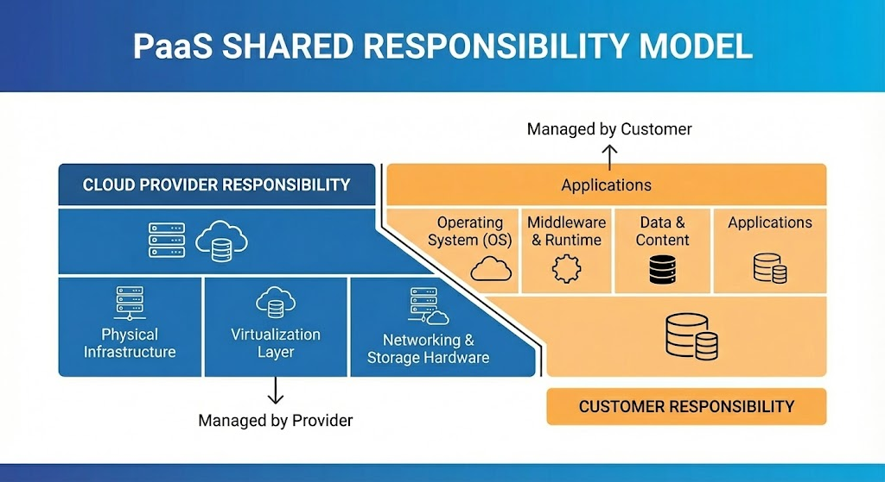
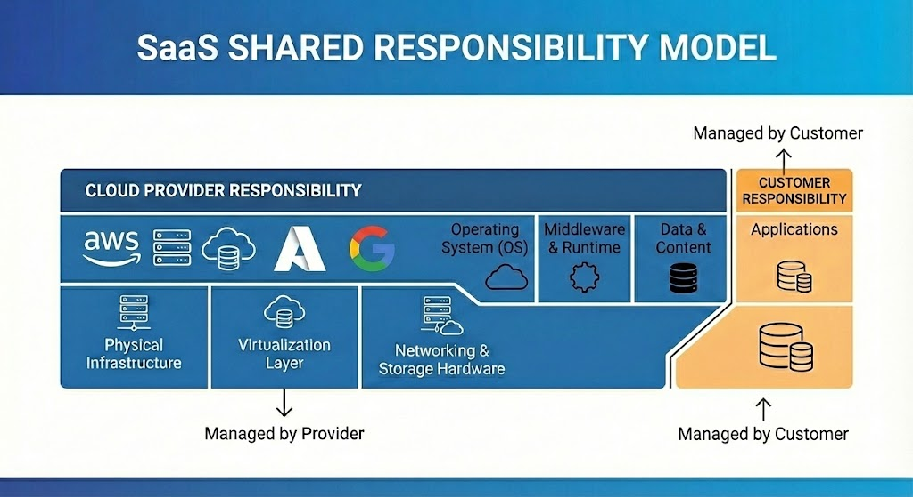
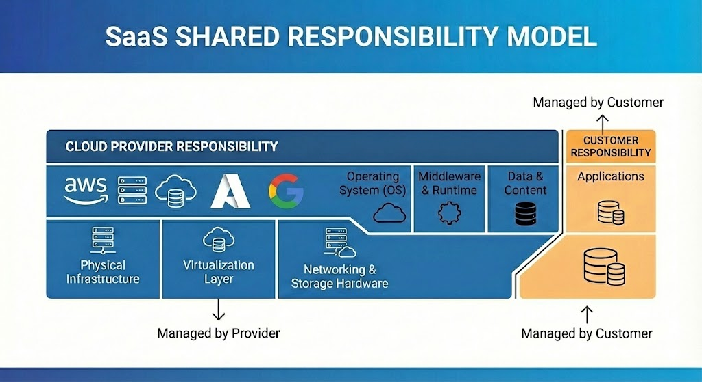

Shared Responsibility Model
IaaS (Infrastructure as a Service)
Provides on-demand, virtualized computing resources—such as servers, storage, and networking—over the internet on a pay-as-you-go basis.
 EC2
EC2
EBS
VPC
 Virtual Machines/
Virtual Machines/
Virtual Network
Provides on-demand, virtualized computing resources—such as servers, storage, and networking—over the internet on a pay-as-you-go basis.
EC2EBS
VPC
Virtual Machines/Virtual Network
PaaS: Platform as a Service
Provides a complete, managed platform—hardware, software, and infrastructure—for developers to build, run, and manage applications over the internet without maintaining underlying servers.
Elastic Beanstalk
App Service

Provides a complete, managed platform—hardware, software, and infrastructure—for developers to build, run, and manage applications over the internet without maintaining underlying servers.
Elastic Beanstalk
App Service

SaaS: Software as a Service
Hosted centrally by a provider and accessed by users over the internet, usually via a web browser, instead of being installed locally. Customers typically pay a recurring subscription fee, allowing them to access, maintain, and update applications,
Amazon WorkDocs
Microsoft 365

Hosted centrally by a provider and accessed by users over the internet, usually via a web browser, instead of being installed locally. Customers typically pay a recurring subscription fee, allowing them to access, maintain, and update applications,
Amazon WorkDocs
Microsoft 365

Shared Responsibility Model
| Responsibility | IaaS | PaaS | SaaS |
|---|---|---|---|
| Physical Data Center | Cloud Provider | Cloud Provider | Cloud Provider |
| Networking & Storage | Cloud Provider | Cloud Provider | Cloud Provider |
| Operating System | Customer | Cloud Provider | Cloud Provider |
| Runtime & Middleware | Customer | Cloud Provider | Cloud Provider |
| Application | Customer | Customer | Cloud Provider |
| Data | Customer | Customer | Customer |
Data Center
A data center is a physical room, building or facility that houses IT infrastructure for building, running and delivering applications and services. It also stores and manages the data associated with those applications and services.
Data centers started out as privately owned, tightly controlled on-premises facilities housing traditional IT infrastructure for the exclusive use of one company. Recently, they've evolved into remote facilities or networks of facilities owned by cloud service providers (CSPs). These CSP data centers house virtualized IT infrastructure for the shared use of multiple companies and customers.

Data centers started out as privately owned, tightly controlled on-premises facilities housing traditional IT infrastructure for the exclusive use of one company. Recently, they've evolved into remote facilities or networks of facilities owned by cloud service providers (CSPs). These CSP data centers house virtualized IT infrastructure for the shared use of multiple companies and customers.
Virtualization vs Containers
Virtualization
Runs multiple virtual machines on one physical server. Each VM has its own OS.
AWS: EC2 (Hypervisor-based)
Azure: Azure Virtual Machines
Runs multiple virtual machines on one physical server. Each VM has its own OS.
AWS: EC2 (Hypervisor-based)
Azure: Azure Virtual Machines
Containers
Share the host OS kernel. Lightweight and faster than VMs.
AWS: ECS, EKS
Azure: Azure Kubernetes Service (AKS)
Share the host OS kernel. Lightweight and faster than VMs.
AWS: ECS, EKS
Azure: Azure Kubernetes Service (AKS)
Region & Availability Zone
Region: A geographic location where cloud resources are hosted.
AWS Example: Asia South (Mumbai)
Azure Example: Central India
Availability Zone: Isolated data centers within a region used for fault tolerance and high availability.
AWS Example: Asia South (Mumbai)
Azure Example: Central India
Availability Zone: Isolated data centers within a region used for fault tolerance and high availability.
VM vs Serverless
Virtual Machines
Always running. You manage OS and scaling.
AWS: EC2
Azure: Azure Virtual Machines
Always running. You manage OS and scaling.
AWS: EC2
Azure: Azure Virtual Machines
Serverless
No server management. Pay only when code runs.
AWS: Lambda
Azure: Azure Functions
No server management. Pay only when code runs.
AWS: Lambda
Azure: Azure Functions
Cloud Storage
Cloud storage allows data to be stored and accessed over the internet. It is highly durable, scalable, and cost-effective.
AWS: Amazon S3 (Object), EBS (Block), EFS (File)
Azure: Blob Storage, Disk Storage, Azure Files
AWS: Amazon S3 (Object), EBS (Block), EFS (File)
Azure: Blob Storage, Disk Storage, Azure Files
Content Delivery Network (CDN)
A CDN is a network of globally distributed servers that cache content closer to users, reducing latency and improving performance.
AWS: CloudFront
Azure: Azure CDN
AWS: CloudFront
Azure: Azure CDN